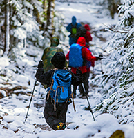
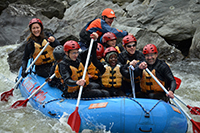
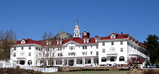

Welcome to Colorado...
Direct from Denver, Colorado
Edited by C. U. Daily
Contributing Sources: http://www.colorado.com
Aspen - Hiking & Skiing
High Altitude Tips

- Start your day by tuning into Aspen Today on Channel 16 to get the latest information about snow conditions, tips for dressing for all weather conditions, ski and snowboard tips, trail grooming guides, on mountain activities, live interviews, and much more. Also, catch the mountain-top weather reports up to six times per hour.
- Drink plenty of water. High altitude can sometimes cause unwanted headaches and other side effects. Drinking lots of water will help you acclimate to the change in altitude during the first couple of days. In addition, drink water before, during and after your day on the hill.
- Don't burn out - use sunscreen. With an average of 300 days of sunshine a year, remember to wear a strong sunblock of with an SPF of at least 15 or more on your face, neck and other area that is exposed prior to going outside. The sun is strong at these high elevations and can cause a very painful sunburn. Even if there is no sunshine before you leave to go out, the weather conditions in the Rockies is very unpredictable and can change rapidly - so be prepared. Also, always carry sunscreen with you at all times. A supply of sunscreen can be found at the On-Mountain Guest Service Centers in case you forget yours.
- Dress in layers. Again the weather in the Rockies can change dramatically - so always be prepared by dressing in layers, goggles, hat, gloves, and always bring a gator.
Idaho Springs - Clear Creek Rafting

Nestled in an historic mining valley, beautiful Colorado scenery complements your exciting whitewater adventure. On our more difficult trips the rapids come one right after another, but if you look carefully, you may spot muskrat, beaver, deer, bighorn sheep, or even an occasional bear or mountain lion!
With an average gradient of 67 feet per mile, and over 100 feet per mile on the advanced section, Clear Creek offers more rapids than most commercially rafted rivers in the state. Beginners are thrilled that an entry level trip has this much whitewater. Intermediate rafters find their trips exhilarating. And with the Advanced Full Day dropping over 1300 vertical feet and boasting over 30 major rapids, even the most seasoned rafters agree-this trip is not for the faint of heart!
Estes Park - The Stanley Hotel

The majestic splendor of the Rocky Mountains provides a breathtaking backdrop for the classically elegant Stanley Hotel. Inside, its gleaming wood, soaring ceilings and understated elegance are coupled with world-class hospitality. Nestled on 35 pristine acres, the hotel offers guests unparalleled natural beauty and a wealth of outdoor activities. A Colorado tradition since 1909, its distinctive New England-inspired facade and attentive staff have made it one of the Rocky Mountains' best-loved and most recognizable.
Novelist Stephen King is said to have found his inspiration for "The Shining" at The Stanley Hotel.
Colorado Links
|